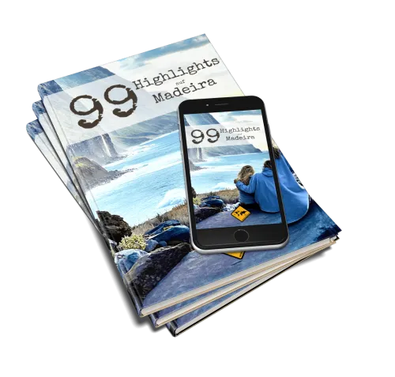
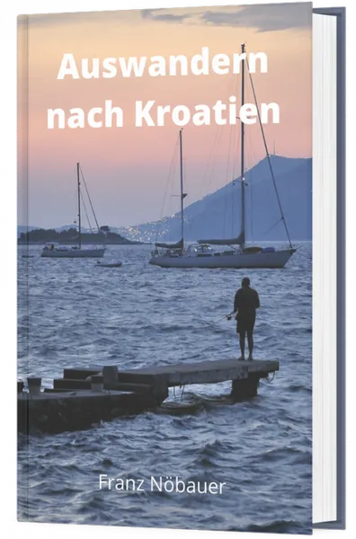
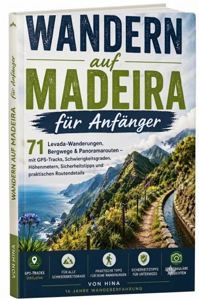
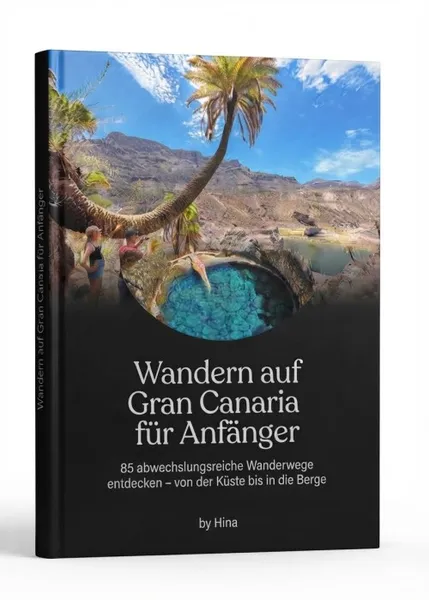

99 Highlights auf Madeira (E-Book Reiseführer)
Produktprofil · Marktplatz-Daten 2026-10-14 · Verkaufsseiten-Recherche 2026-10-14 · Kategorien: Travel & Culture, Languages, Social Media
- 99 Highlights auf Madeira (E-Book Reiseführer) ist ein/e E-Book in Travel & Culture und Languages, vertrieben über den Digistore24-Marktplatz von Anbieter rheinrost, gelistet seit 2016-06-02.
- Listenpreis $13.87 (single payment) — Checkout, Auslieferung und Rückerstattungen laufen über Digistore24 selbst, nicht über den Anbieter.
- Käuferschutz: keine standardisierte Garantie-Formulierung gefunden — Rückerstattungsbedingungen vor der Zahlung auf der offiziellen Seite prüfen.
Interesse an 99 Highlights auf Madeira (E-Book Reiseführer)? Aktueller Preis, Boni und Garantiebedingungen finden Sie auf der offiziellen Seite des Anbieters:
Offizielle Verkaufsseite ansehen
Affiliate-Link (Werbung) — wir verdienen ggf. eine Provision, ohne Mehrkosten für Sie.

Marktplatz-Daten
| Produkttyp | E-Book |
|---|---|
| Preis | $13.87 (Single payment) |
| Garantie/Rückgabe | Laut Verkaufsseite des Anbieters — vor dem Kauf auf der offiziellen Seite prüfen |
| Anbieter | rheinrost (gelistet seit 2016-06-02) |
Marktplatz-Beschreibung des Anbieters
Empfehle unser einzigartiges E-Book für alle reisebegeisterte Madeira Fans mit einer hohen Kaufrate. Deine Vorteile: Exzellente Conversions : Profitiere von unseren hohen Conversions (Kaufraten) von bis zu 36%. Das bedeutet, dass im Schnitt mehr als jeder Dritte, den du auf das Bestellformular leitest, kauft! Hohe Provisionen : Wir bieten dir bis zu 35 Prozent Provision auf deine vermittelten Verkäufe. Wiederkehrende Provisionen für geworbene Affiliates : Erhalte 15 Prozent wiederkehrende Zweistufen-Provisionen auf die Provisionen deiner Affiliates, wenn du einen neuen Affiliate wirbst. Provisionen für Folgeprodukte & Upsells : Profitiere automatisch von Provisionen auf den Kauf von Folgeprodukten und Upsells. D.h.: Du bewirbst ein Produkt und verdienst beim Kauf weiterer Produkte automatisch mit. Hochkonvertierende Werbemittel : Große Auswahl getesteter und durchoptimierter Werbemittel, die du sofort einsetzen kannst: Klickstarke und hochkonvertierende Banner, Vorlagen für E-Mail-Texte und mehr - für mehr Leads und Verkäufe. Geringe Stornoquote : Wir haben eine geringe Stornoquote. Besuche jetzt unsere offizielle Seite zum Affiiate Partnerprogramm , um noch heute Affiliate zu werden.
Von der Verkaufsseite des Anbieters
Seitentitel: Madeira Reiseführer - 99 Highlights | unaufschiebbar.de
Meta-Beschreibung: Unser Madeira Reiseführer zeigt dir alle Highlights der Insel ✅ Wanderungen ✅ Strände ✅ Aussichtspunkte ✅ Lohnenswerte Orte ✅ Mehr »
Hauptüberschrift
99 Highlights auf Madeira
Abschnitts-Überschriften
- mit Wanderungen, Stränden, Aussichtspunkten und allen lohnenswerten Orten
- Madeira Reiseführer (E-Book)
- mit 99 Highlights für deinen Urlaub
- Was du zu unserem Madeira Reiseführer noch wissen solltest
- Orte abseits der Touristenmassen
- Übersichtlich in Regionen strukturiert
- Kosten, Öffnungszeiten & Dauer
- Bus-Infos inklusive
- Fünf Tages-Trips zum Nachfahren
- Antippbare / anklickbare Links im Madeira Reiseführer
Einstiegstext
Deine Vorteile auf einen Blick: ✓ Die wichtigsten Sehenswürdigkeiten, Ausflugsziele, Wanderungen und Orte kompakt in einem PDF zusammengefasst ✓ Inkl. Geheimtipps ✓ Übersichtliches Design ( keine langen Textwüsten) ✓ Direkt anklickbare Links (z.B. zu Google Maps) ✓ Geeignet für Smartphones, Tablets, PCs und Laptops ✓ 2. Auflage (März 2026)
Wir haben nur die Orte und Ausflugsziele zusammengetragen, die sich unserer Erfahrung nach wirklich lohnen. Deine Urlaubszeit ist schließlich kostbar und du solltest sie optimal nutzen können.
In unserem Madeira Reiseführer findest du klickbare Verlinkungen. Damit kannst du dich z.B. direkt per Google Maps navigieren lassen oder findest weitere Informationen. Dies erspart dir Sucherei und sorgt dafür, dass du deine Zeit wertvoller nutzen kannst.
Wir haben auf 130 Seiten 99 verschiedene Highlights auf Madeira zusammengestellt. Hinzukommen fünf Routen für empfohlene Tagesausflüge, die du mit dem Mietwagen absolvieren kannst. Zudem bietet unser Madeira Reiseführer einige Basis-Informationen wie Klimawerte und portugiesische Vokabeln.
Fragen, die die Verkaufsseite beantwortet
- Klingt das interessant für dich?
Recherche-Methode: rohes HTML · 2284 Wörter · Qualität: rich · recherchiert am 2026-10-14. Vollständige Recherche-Datei (MD) ↗
Wie Produkte dieser Art geliefert werden
Allgemeiner Hinweis zu diesem Produkttyp (keine anbieterspezifische Anleitung): E-Books auf Digistore24 werden als digitaler Download geliefert (meist PDF/EPUB): direkt nach dem Checkout erhalten Sie einen Downloadlink oder Mitgliederzugang und können auf jedem Gerät lesen. Für die genaue Anwendung von 99 Highlights auf Madeira (E-Book Reiseführer) sind die offizielle Verkaufsseite und die enthaltenen Materialien maßgeblich.
Gut zu wissen
- Keine Garantie-Formulierung in unserer Recherche gefunden — bestätigen Sie das Rückgabefenster auf der offiziellen Seite, bevor Sie kaufen.
Was ist 99 Highlights auf Madeira (E-Book Reiseführer)?
99 Highlights auf Madeira (E-Book Reiseführer) ist ein/e e-book in der Kategorie Reisen & Kultur des Digistore24-Marktplatzes, veröffentlicht von Anbieter rheinrost und im Verkauf seit 2016-06-02. Der Anbieter beschreibt es so: "Empfehle unser einzigartiges E-Book für alle reisebegeisterte Madeira Fans mit einer hohen Kaufrate. Deine Vorteile: Exzellente Conversions : Profitiere von unseren hohen Conversions (Kaufraten) von bis zu 36%. Das bedeutet, dass im Schnitt mehr als jeder Drit" (Marktplatz-Beschreibung des Anbieters, leicht gekürzt).
99 Highlights auf Madeira (E-Book Reiseführer) Preis: was Sie zahlen
Der Marktplatz listet 99 Highlights auf Madeira (E-Book Reiseführer) zum $13.87 Preis (single payment). Digistore24 fügt im Checkout die gesetzliche Steuer Ihres Landes hinzu — dort sehen Sie den Endbetrag vor der Zahlung. Eine separate Plattformgebühr gibt es nicht; Anbieter können eigene Upsells nach dem Checkout anbieten.
99 Highlights auf Madeira (E-Book Reiseführer) Rückerstattung und Geld-zurück-Garantie
Wir haben keine standardisierte Garantie-Formulierung auf der Verkaufsseite gefunden. Rückerstattungen für Digistore24-Käufe laufen über die Plattform: Antrag über den Support-Link in Ihrer Bestell-E-Mail, innerhalb des Garantiezeitfensters, das im Checkout angezeigt wird. Praktischer Rat: Entscheiden Sie innerhalb des Fensters — wenn das Produkt unter den Erwartungen bleibt, erstatten lassen statt irren lassen.
Mechanik im Detail: So funktionieren Digistore24-Rückerstattungen.
Für wen ist 99 Highlights auf Madeira (E-Book Reiseführer) geeignet?
Basierend auf der Reisen & Kultur-Einordnung und der single payment-Abrechnung richtet sich 99 Highlights auf Madeira (E-Book Reiseführer) an Käufer, die reisen & kultur-Lösungen suchen zum Einstiegspreis. Der ehrliche Test ist nicht die Kategorie, sondern Ihre eigene Situation: Werden Sie es realistisch innerhalb des Garantiefensters nutzen? Wenn ja, ist der Preis eine Investition; wenn nein, ist er Ballast — unabhängig von der Qualität.
Ist 99 Highlights auf Madeira (E-Book Reiseführer) seriös? Was Sie vor dem Kauf prüfen
Wir bewerten keine Seriosität — das kann niemand, ohne das Produkt zu nutzen. Prüfbare Punkte, alle auf dieser Seite: die Marktplatz-Historie des Anbieters (im Verkauf seit 2016-06-02), die wörtlichen Verkaufsseiten-Auszüge unten (gekennzeichnet als Anbieteraussagen — deren Werbung, nicht unsere Empfehlung), die Garantiebedingungen im Checkout und die Auslieferungsart. Vorsichtsignale bei jedem Angebot: Countdown-Dringlichkeit gepaart mit vagen Rückerstattungsbedingungen, Testimonials ohne Datum und Anbieterseiten, die den Preis bis zum Checkout verstecken.
Wie kommen Sie nach dem Kauf an 99 Highlights auf Madeira (E-Book Reiseführer)?
Der Checkout läuft über Digistore24. Nach der Zahlung: E-Books auf Digistore24 werden als digitaler Download geliefert (meist PDF/EPUB): direkt nach dem Checkout erhalten Sie einen Downloadlink oder Mitgliederzugang und können auf jedem Gerät lesen. Bewahren Sie die Bestell-E-Mail auf — sie ist Ihr Schlüssel zum/d zur e-book, zu Rückerstattungsanträgen und zum Digistore24-Käufersupport.
99 Highlights auf Madeira (E-Book Reiseführer) Erfahrungen: so recherchieren Sie richtig
Die meisten „Erfahrungsberichte" zu Marktplatz-Produkten sind Affiliate-Inhalte — einschließlich Seiten wie dieser, die an Käufen mitverdienen. Behandeln Sie jeden Bericht (auch unseren) als Ausgangspunkt und prüfen Sie gegen Primärquellen: die Verkaufsseite des Anbieters, die Digistore24-Rückerstattungsrichtlinie und — für reisen & kultur — unabhängige Communities außerhalb des Affiliate-Ökosystems. Auf dieser Seite sind die Verkaufsseiten-Auszüge unten wörtlich zitiert, damit Sie die Aussagen des Anbieters bewerten können, ohne wegzuklicken.
Wie Sie 99 Highlights auf Madeira (E-Book Reiseführer) sicher kaufen
- Öffnen Sie die offizielle Verkaufsseite und lesen Sie das vollständige Angebot.
- Bestätigen Sie Endpreis und Garantiezeitfenster auf der Digistore24-Kassenseite — sie ist bindend, kein Vergleichsportal.
- Zahlen Sie innerhalb des Digistore24-Checkouts (niemals per Überweisung oder Off-Platform-Links).
- Speichern Sie die Bestellbestätigung; notieren Sie die Rückerstattungsfrist im Kalender.
- Prüfen Sie zügig. Der Digistore24-Käufersupport hilft, wenn der Anbieter nicht reagiert.
Vollständiges Recherche-Archiv für dieses Produkt (Markdown: kompletter Marktplatz-Datensatz + wörtliche Verkaufsseiten-Auszüge): 99 Highlights auf Madeira (E-Book Reiseführer) — vollständiges Datenarchiv (Markdown-Datei: 44662-99-highlights-auf-madeira-e-book-reisef-hrer.md).
- Listenpreis & Abrechnung — Quelle: offizielle Digistore24-Marktplatz-API, Stand 2026-10-14. Maßgeblich für den aktuellen Preis ist immer die Kassenseite.
- Verkaufsseiten-Zitate — Quelle: https://www.unaufschiebbar.de/madeira-reisefuehrer-99-highlights/, abgerufen 2026-10-14 (Methode: rohes HTML). Verify: offizielle Seite öffnen.
- Garantie / Rückgabe — vom Anbieter festgelegt; vor dem Kauf auf der Verkaufsseite bestätigen.
- Nicht von uns geprüft: Produktqualität, Ergebnisse, Testimonials — kein Praxistest für dieses Listing durchgeführt.
Häufige Fragen zu 99 Highlights auf Madeira (E-Book Reiseführer)
Antworten aus dem Marktplatz-Snapshot (2026-10-14) und der Verkaufsseiten-Recherche (2026-10-14); Anbieteraussagen sind inline gekennzeichnet.
Was ist 99 Highlights auf Madeira (E-Book Reiseführer)?
99 Highlights auf Madeira (E-Book Reiseführer) ist ein Angebot des Typs „E-Book" im Digistore24-Marktplatz, Anbieter: rheinrost, gelistet seit 2016-06-02. Eingepflegt unter Reisen & Kultur und Sprachen. Digistore24 wickelt Checkout, Lieferung und Rückgaben ab.
Wie viel kostet 99 Highlights auf Madeira (E-Book Reiseführer)?
Der Digistore24-Marktplatz listet es für $13.87 (single payment). Preise legt der Anbieter fest und können sich ändern — der Marktplatz-Eintrag oben zeigt den Schnappschuss; die offizielle Verkaufsseite zeigt den aktuellen Preis.
Gibt es eine Geld-zurück-Garantie für 99 Highlights auf Madeira (E-Book Reiseführer)?
Unsere Verkaufsseiten-Recherche hat keine explizite Garantie-Formulierung gefunden. Viele Digistore24-Produkte bieten 60 Tage Geld-zurück, aber das legt jeder Anbieter selbst fest — bestätigen Sie es auf der offiziellen Verkaufsseite, bevor Sie kaufen.
Ist 99 Highlights auf Madeira (E-Book Reiseführer) seriös?
Wir bewerten keine Seriosität — wir veröffentlichen überprüfbare Zahlen: Anbieter rheinrost (gelistet seit 2016-06-02), mit der vollständigen Verkaufsseiten-Recherche archiviert auf dieser Seite (Anbieteraussagen als solche gekennzeichnet). Lesen Sie unsere 6-Punkte-Bewertungsmethode und entscheiden Sie anhand der Zahlen — oder diskutieren Sie 99 Highlights auf Madeira (E-Book Reiseführer) auf GitHub.
Wo kann ich 99 Highlights auf Madeira (E-Book Reiseführer) sicher kaufen?
Nur über die offizielle Verkaufsseite, die auf dieser Seite verlinkt ist (Checkout und Rückgaben laufen über Digistore24). Prüfen Sie dort Preis und Garantie vor der Bestellung. Der Link ist ein Affiliate-Link — der Kauf unterstützt diese Website ohne Mehrkosten für Sie.
Wie erhalte ich 99 Highlights auf Madeira (E-Book Reiseführer) nach der Zahlung?
Der Checkout läuft über Digistore24: Nach der Zahlung erhalten Sie Ihren Zugang oder Download per E-Mail und in Ihrem Digistore24-Kundenkonto. Lieferdetails für diesen Produkttyp: E-Books auf Digistore24 werden als digitaler Download geliefert (meist PDF/EPUB): direkt nach dem Checkout erhalten Sie einen Downloadlink oder Mitgliederzugang und können auf jedem Gerät lesen. Bei Problemen kann der Digistore24-Käufersupport Ihre Bestellung wiederherstellen.
Alle 50 Käuferfragen zu Reisen & Kultur — das komplette Kategorie-FAQ.
99 Highlights auf Madeira (E-Book Reiseführer) auf Reddit diskutieren
In Community-Threads vergleichen echte Käufer Erfahrungen. Wir verlinken Communities, keine einzelnen Posts — Threads verschwinden, Subreddits bleiben:
- r/sozialmedia — deutschsprachige Community mit Diskussionen zu travel & culture.
- Reddit-Suche nach „99 Highlights auf Madeira (E-Book Reiseführer)" — Live-Ergebnisse, von uns nicht beeinflusst.
- Top-„Erfahrungs"-Treffer dieses Jahr — selbst nach Aktualität filtern.
Passendes auf Amazon.de
Physische Produkte und Zubehör, die häufig zusammen mit 99 Highlights auf Madeira (E-Book Reiseführer) gekauft werden:
- Sprachkurs auf Amazon.de — Top-Ergebnisse, Amazon-Ranking.
- Bestseller: Sprachkurs — live Liste von Amazon, von uns nicht kuratiert.
Werbung: Als Amazon-Partner verdient DigistorePicks DE an qualifizierten Käufen (Partner-tag adminstorede-21). Amazon setzt eigene Preise und Provisionen (niedrige einstellige Prozente — weit unter den 30–75% der Digistore24-Anbieter). Amazon ist ein Convenience-Angebot für Sachprodukte, kein Ersatz für das digitale Produkt oben.
Ähnliche Angebote in Reisen & Kultur

Hohe Provision : 50 % Provision auf jede Empfehlung! Statt Holzklasse endlich Business oder First Class Flüge zu Economy Preisen ✈️ Bezahle Business + First Cla
![Goodbye 9 to 5: Digitaler Nomade werden PREMIUM [Onlinekurs]](../assets/products/32101.webp)
Empfehle unser einzigartiges Produkt für alle angehenden digitalen Nomaden mit einer hohen Kaufrate. Deine Vorteile: Exzellente Conversions : Profitiere von uns
![Goodbye 9 to 5:Digitaler Nomade werden STANDARD [Onlinekurs]](../assets/products/32102.webp)
Empfehle unser einzigartiges Produkt für alle angehenden digitalen Nomaden mit einer hohen Kaufrate. Deine Vorteile: Exzellente Conversions : Profitiere von uns

Die ganzheitliche Lösung gegen Flugangst – entwickelt von einem Piloten. Der FlyCalm Ultimate Kurs ist die umfassendste Online-Lösung gegen Flugangst . Er richt
Weitere Angebote von rheinrost
Gesamtes Sortiment: rheinrost Anbieter-Hub — alle Listings mit Marktplatz-Daten.
Empfehle unser einzigartiges Produkt für alle angehenden digitalen Nomaden mit einer hohen Kaufrate. Deine Vorteile: Exzellente Conversions : Profitiere von uns
Empfehle unser einzigartiges Produkt für alle angehenden digitalen Nomaden mit einer hohen Kaufrate. Deine Vorteile: Exzellente Conversions : Profitiere von uns
![Das Herz eines Mannes erobern [Hörbuch]](../assets/products/25595.webp)
Empfehle unser einzigartiges Produkt zum Thema Beziehung mit einer hohen Kaufrate. Deine Vorteile: Exzellente Conversions : Profitiere von unseren hohen Convers
![Das große E-Book Beziehungspaket [E-Books]](../assets/products/25596.webp)
Empfehle unser einzigartiges Produkt zum Thema Beziehung mit einer hohen Kaufrate. Deine Vorteile: Exzellente Conversions : Profitiere von unseren hohen Convers
99 Highlights auf Madeira (E-Book Reiseführer) ist auch gelistet in
Sprachen (34 Produkte) · Social Media (391 Produkte)
Ähnliche Preislage in Reisen & Kultur

10. Überarbeitete Ausgabe Bist Du auf der Suche nach einer hilfreichen Lektüre, in der Dir alles wichtige zum Auswandern nach Kroatien erklärt wird und Dich dab

Produktpreis: 12,99 € Ihre Provision: 60% (Earn approximately 7,79 € per copy sold!)
• Hohe Einnahmen: Verdienen Sie massive 70 % Provision bei jedem Verkauf eines stark konvertierenden, zielgerichteten Reiseführers zum unschlagbaren Impulskauf-

Wandern auf Gran Canaria für Anfänger Entdecken Sie die schönsten Routen abseits des Massentourismus. Dieses E-Book liefert Ihren Kunden unkomplizierte Schritt-
Ähnliche Suchanfragen
Wo Sie es sich ansehen können
Wo Sie es sich ansehen können
Aktuelle Preise, Garantie und Boni finden Sie auf der offiziellen Verkaufsseite:
Offizielle Verkaufsseite ansehen
Das ist ein Affiliate-Link (Werbung) — kaufen Sie darüber, verdienen wir ggf. eine Provision, ohne Mehrkosten für Sie.
Quellen & weiterführende Informationen
- Offizielle Verkaufsseite (aktueller Preis, Garantie, Boni): www.unaufschiebbar.de/madeira-reisefuehrer-99-highlights/ (Affiliate-Link)
- Öffentliche Digistore24-Produktseite: checkout-ds24.com/product/82899
- Vollständige Recherche-Datei (Markdown, versioniert): content/products/44662-99-highlights-auf-madeira-e-book-reisef-hrer.md
- Affiliate-Supportseite des Anbieters: www.unaufschiebbar.de/partner/
- Marktplatz-Kategorie: Reisen & Kultur
Wie wir Produkte wie 99 Highlights auf Madeira (E-Book Reiseführer) bewerten
Sechs Prüfungen, ausschließlich mit offiziellen Marktplatz-Zahlen. Die vollständige Bewertungsmethode lesen · unsere Recherche-Standards & Kennzeichnung.
Fragen oder eigene Erfahrungen mit 99 Highlights auf Madeira (E-Book Reiseführer)?
Praxis-Tests veröffentlichen wir erst, nachdem wir ein Produkt selbst gekauft haben — aber Ihre Erfahrung hilft anderen Lesern: Diskussion zu 99 Highlights auf Madeira (E-Book Reiseführer) auf GitHub starten/verfolgen. Falsche Zahl gefunden? Korrektur melden — jede Seite zeigt ihre Datenstände, Korrekturen gelten für die ganze Website.